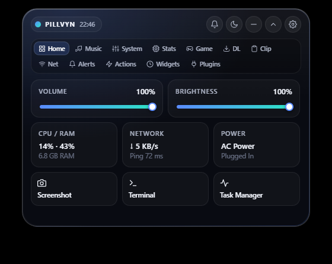
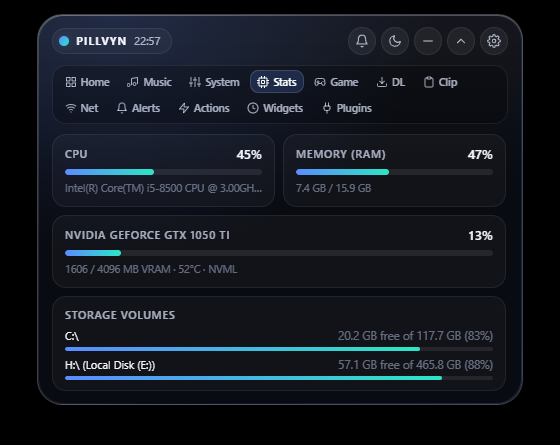
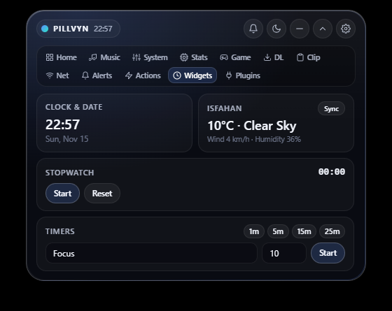
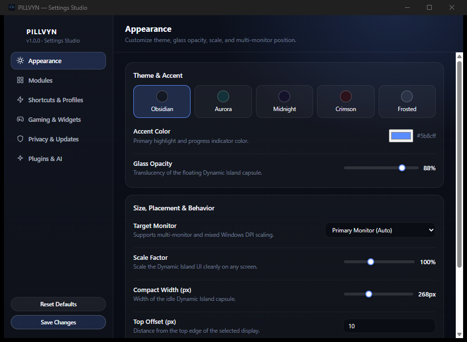

Dynamic Island Core
Frameless transparent capsule with Minimized, Compact, and Expanded spring states, multi-monitor DPI awareness, and smart cursor click-through around the pill.
PILLVYN brings an obsidian-glass Dynamic Island to your desktop — uniting live Windows media controls, WASAPI audio routing, hardware & GPU telemetry, Steam/browser downloads, clipboard history, and gaming focus into a fast, near-zero-idle floating hub.
Interactive UI state preview — full native Windows telemetry runs inside the installed desktop application.
Frameless transparent capsule with Minimized, Compact, and Expanded spring states, multi-monitor DPI awareness, and smart cursor click-through around the pill.
Live track metadata, extracted album artwork, seekable timeline, and playback transport controls across Spotify, Edge, Chrome, Firefox, and VLC.
Master output & microphone gain/mute, default output/input device switching, WMI + DDC/CI brightness, battery telemetry, and Windows connectivity shortcuts.
CPU, RAM, disk volumes, DXGI adapter discovery, Windows PDH 3D engine load, and NVIDIA NVML temperatures, VRAM, and wattage where supported.
Detects Steam RunningAppID, known games, and fullscreen apps, auto-suppresses notifications, and supports click-through HUD mode without DLL injection.
Real `.crdownload`/`.part`/Steam `.acf` progress & ETA, event-driven `AddClipboardFormatListener` history, and live `GetIfTable2` + ICMP ping + VPN detection.





Built on Rust and Tauri 2 using WebView2 instead of bundling a separate Chromium runtime. Clipboard capture uses Win32 window messages (`WM_CLIPBOARDUPDATE`) with zero polling, and adaptive telemetry intervals slow down automatically on battery power.
Per-window Tauri v2 capability isolation, strict Quick Action and URL validation, sensitive clipboard token filtering, consent-gated GitHub Release update checks, and strictly optional local Ollama AI support.
Packaged as a standalone x64 NSIS setup executable with Start Menu & Desktop shortcuts, clean upgrade shutdown hooks, and automatic WebView2 bootstrap verification.
winget / GitHub Releases → PILLVYN_1.0.0_x64-setup.exe